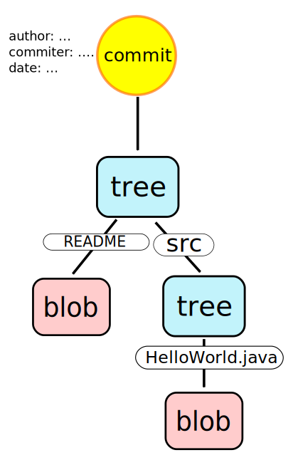

Git DVCS
Prof. dr Igor Dejanović (igord at uns ac rs)
Kreirano 2023-12-06 Wed 10:15, pritisni ESC za mapu, m za meni, Ctrl+Shift+F za pretragu
Sadržaj
- 1. Uvod u Git
- 2. Git repozitorijum
- 3. Instalacija i konfiguracija
- 4. Osnovne operacije
- 5. Grane (Branches)
- 6. Spajanje grana (merging)
- 7. Razmena promena
- 8. Ispravke grešaka
- 9. Održavanje repozitorijuma
- 10. Modeli grananja
- 11. Preporučena praksa
- 12. Subversion i lokalne grane
- 13. Implementacija
- 14. Literatura
1. Uvod u Git
1.1. Šta je Git?
- Distribuirani sistem za kontrolu verzija (Distributed Version Control System - DVCS).
- Razvoj započeo Linus Torvalds, u aprilu 2005. godine, posle promene politike licenciranja BitKeeper-a koji je do tada korišćen za razvoj linux kernela. Dostupan na adresi http://git-scm.com/
1.2. Git - osobine
- Izuzetno brz i skalabilan.
- Jednostavan dizajn.
- Većina operacija su lokalne prirode.
- Odlična podrška za nelinearan razvoj (podrška za veliki broj grana) i velike projekte (npr. Linux kernel).
- Pisan najvećim delom u C-u, ali su delovi pisani u Perl-u, bash-u itd.
- Komande niskog nivoa (plumbing). Komande visokog nivoa (porcelain).
- Ne prati fajlove već sadržaj. Izmene se eksplicitno dodaju pre commit-a.
- Kriptografska autentikacija istorije promena.
1.3. Osnovni workflow
- Ako ne postoji klon repozitorijuma na lokalnom računaru vrši se kloniranje udaljenog repozitorijuma (ovo se generalno radi jednom).
- Menjaju se fajlovi.
- Izmene se dodaju u pripremnu zonu (indeks).
- Vrši se trajno beleženje promene (operacija commit).
2. Git repozitorijum
2.1. Praćenje sadržaja
Osnova git repozitorijuma je praćenje sadržaja a ne fajlova i promena nad njima. Informacije o promenama se izračunavaju po potrebi.
I’m right. I’m always right, but sometimes I’m more right than other times. And dammit, when I say “files don’t matter”, I’m really really Right(tm).ref[1].
2.2. Veza radnog stabla, indeksa i repozitorijuma

2.3. Životni ciklus fajla u git repozitorijumu
2.4. Git repozitorijum
- Objektna baza: Jednostavan model repozitorijuma baziran na mapama (parovi ključ-vrednost).
- Ključevi su SHA1 heš sadržaja koji se čuva + hedera.
- Tri vrste objekata/vrednosti. Sadržaj se komprimuje pomoću zlib biblioteke.
- Reference - pokazivači na određene objekte u repozitorijumu.
- Repozitorijum se nalazi u
.gitdirektorijumu unutar direktorijuma gde je izvršena inicijalizacija sagit initkomandom (videti u nastavku).
2.5. Git repozitorijum sa objektima i referencama
2.6. Prikaz popularnih hosting rešenja
3. Instalacija i konfiguracija
3.1. Vrste klijenata
- GUI
- FLOSS: EGit (Eclipse plugin), git-cola, TortoiseGit, Git Extensions…
- Komercijalni: SmartGit
- Command line - kanonički git klijent
3.2. Pomoć - help
Spisak osnovnih komandi git-a se može dobiti sa:
$ git help usage: git [–version] ... ... The most commonly used git commands are: add Add file contents to the index bisect Find by binary search the change that introduced a bug branch List, create, or delete branches checkout Checkout a branch or paths to the working tree ...
Detaljna pomoć za komandu se dobija sa:
$ git help <ime komande>
3.3. Konfiguracija
- Konfiguracija se čuva u tekstualnim fajlovima koji imaju strukturu .ini fajlova.
- Preporučivo je parametre podešavati putem
git configkomande. - Tri nivoa konfiguracije:
- sistemska (za sve korisnike instalacije) - fajl
/etc/gitconfig - po korisniku (važi za ulogovanog korisnika) - fajl
~/.gitconfig(POSIX) iliC:\Documents and Settings\$USER\.gitconfig(Windows) - po repozitorijumu (važi za tekući repozitorijum) - fajl
.git/configunutar repozitorijuma
- sistemska (za sve korisnike instalacije) - fajl
3.4. Osnovna konfiguracija
Konfigurisanje imena i email-a:
$ git config --global user.name "Igor Dejanović" $ git config --global user.email "igor DOT dejanovic AT gmail DOT com"
Konfiguracija se može izlistati sa:
$ git config --list
Editor za unos log poruka je postavljen na podrazumevani sistemski (najčešće
vi ili vim). Windows korisnici uglavnom nisu vični upotrebi ovog editora.
Podrazumevani editor se na windowsu može promeniti na sledeći način:
# Windows - Obratiti pažnju na duple navodnike!!!
$ git config --global core.editor "'C:/Program Files/Windows NT/Accessories/wordpad.exe'"
3.5. Konfiguracija za SSL i proxy
Za pristup serverima sa nevalidnim sertifikatom (npr. samopotpisan sertifikat) potrebno je podesiti sledeće za sertifikat koji smo preuzeli sa servera:
$ git config --global http.sslCAInfo /home/igor/config/all-certs.crt
ili ukoliko ne želimo proveru sertifikata:
$ git config --global http.sslVerify false
Ako je potreban pristup preko HTTP proxy-ja to se po korisniku može podesiti sa:
$ git config --global http.proxy 192.168.77.100:8080
3.6. Povezivanje sa serverom upotrebom SSH ključeva
- Ključevi se nalaze u
~/.ssh/direktorijumu. - Generišu se sa komandom:
$ ssh-keygen -t rsa -b 4096 -C "your_email@example.com" Generating public/private rsa key pair. Enter file in which to save the key (/Users/you/.ssh/id_rsa): [Press enter] Enter passphrase (empty for no passphrase): [Type a passphrase] Enter same passphrase again: [Type passphrase again] Your identification has been saved in /Users/you/.ssh/id_rsa. Your public key has been saved in /Users/you/.ssh/id_rsa.pub. The key fingerprint is: 01:0f:f4:3b:ca:85:d6:17:a1:7d:f0:68:9d:f0:a2:db your_email@example.com
3.7. Konfigurisanje diff/merge alata
$ git config --global merge.tool meld
Ili na windows-u:
$ git config --global merge.tool "'C:\ Program Files\...'"
Da bi se izbeglo pitanje da li želite da pokrenete diff alat:
$ git config --global --add difftool.prompt false
3.8. Konfiguracija veličine slova u nazivima fajlova
Unix fajl sistemi su uglavnom case-sensitive dok kod windows-a to nije
slučaj. Stoga je na unix file sistemima sasvim legalno da postoje dva fajla
istog naziva ali različite veličine slova (na primer File1.txt i file1.txt).
Ovo na windows-u nije moguće pa je dobro, ukoliko članovi tima rade na
različitim operativnim sistemima, podesiti sledeće:
$ git config --global core.ignorecase true
Na taj način će git tretirati fajlove različitog case-a kao identične i ukoliko se kreira fajl istog naziva kao postojeći u repozitorijumu ali različitog case-a on će biti ignorisan.
3.9. Konfiguracija završetaka linija (line endings)
Unix na kraju reda kod tekstualnih fajlova koristi LF bajt. Windows koristi dva
bajta - CR i LF. Današnji editori su u stanju da rade sa oba standarda. Git
podržava automatsku konverziju krajeva linija. Tekuća praksa je da se kreira
konfiguracioni fajl .gitattributes u korenskom folderu u kome se “pomaže”
git-u da pravilno odredi tekstualne i binarne fajlove. Ovaj fajl se commit-uje
u repozitorijum tako da svi članovi tima imaju isto podešavanje. Sadržaj
.gitattributes fajla:
* text=auto *.png binary *.jpg binary *.exe binary
Napomena: Za dodatnu konfiguraciju pogledati konfiguracione parametre
core.eol, core.autocrlf i core.safecrlf.
3.10. Normalizacija krajeva linija u repozitorijumu
Ako se u git repozitorijumu već nalaze fajlovi sa CRLF tada je potrebno izvršiti normalizaciju svih tekstualnih fajlova na LF pratite uputstvo sa GitHub-a.
4. Osnovne operacije
4.1. Inicijalizacija repozitorijuma
Repozitorijum je skup metapodataka koji se nalaze u skrivenom folderu .git
unutar korenskog foldera projekta.
Kreiranje se obavlja na sledeći način:
# Prelazak u folder gde se nalazi izvorni kod
# projekta
$ cd ~/Projekat
# Inicijalizacija
$ git init
Initialized empty Git repository in
/home/igor/Projekat/.git/
Ovim je kreiran prazan repozitorijum. Sledeći korak je dodavanje sadržaja.
4.2. Kloniranje repozitorijuma
Repozitorijum možemo kreirati kloniranjem udaljenog repozitorijuma.
$ git clone https://puppet.ftn.uns.ac.rs/rks/tim1/git RKSProjekat
Ili na primer ako se podigne lokalni server sa git daemon (videti sekciju
Razmena promena).
$ git clone git://192.168.100.50/ mojProjekat
gde je 192.168... IP adresa računara na kojem je daemon pokrenut
4.3. Ignorisanje fajlova
Obavlja se putem fajla .gitignore koji se nalazi u korenskom folderu projekta.
Sadržaj je sledećeg oblika:
# Ovo je komentar. # Ignorišemo sve privremene fajlove *.tmp *~ *.class /docs/*.html # Ignorisemo sve .html fajlove u docs i poddirektorijumima /docs/**/*.html # Ali ne ignorisemo rucno pisanu dokumentaciju !/docs/manual/*.html
.gitignore fajl se može kreirati i u poddirektorijumima i u tom slučaju važi
samo za dati poddirektorijum.
4.4. Status repozitorijuma
Status predstavlja informacije kao što su:
- Grana na kojoj se nalazi radno stablo.
- Koji fajlovi su novi, nisu ignorisani i nisu spremni za dodavanje.
- Koji fajlovi/sadržaji su spremni za dodavanje.
4.5. Status repozitorijuma
Na primer, za repozitorijum koji ima lokalnih promena
$ git status
# On branch master
# Changes not staged for commit:
# (use "git add <file>..." to update what will be committed)
# (use "git checkout – <file>..." to discard changes in working directory)
#
# modified: fajl2.txt
#
# Untracked files:
# (use "git add <file>..." to include in what will be committed)
#
# file1.txt
# no changes added to commit (use "git add" and/or "git commit -a")
- Radno stablo je na grani master (osnovna grana u git repozitorijumu – videti u nastavku).
fajl2.txtje izmenjen ali nije pripremljen za dodavanje dok jefile1.txtnovi fajl koji se trenutno ne prati.
4.6. Priprema index-a
Priprema sadržaja za commit se obavlja operacijama add, rm i sl.
# Dodavanje sadržaja
$ git add MojaKlasa.java
$ git add .
# Interaktivno dodavanje sadržaja
$ git add -p .
# Dodavanje/uklanjanje svih novih/modifikovanih/obrisanih fajlo
$ git add -A .
# Uklanjanje iz radnog stabla i indeksa.
$ git rm MojaKlasa.java
# Uklanjanje iz indeksa uz brisanje iz repozitorijuma.
# Fajl ostaje u radnom stablu ali se više ne prati.
$ git rm --cached MojaKlasa.java
# Uklanjanje promena zabeleženih u indeksu
$ git reset HEAD ili samo git reset
# Uklanjanje zabeleženih promena nad fajlom iz indeksa
$ git reset HEAD <putanja do fajla>
Promene se beleže u index-u.
4.7. Napomena za inicijalni commit
Pri inicijalnom commit-u repozitorijum je prazan pa HEAD pokazivač ne
postoji. Zbog toga nije moguće poništiti indeks komandom git reset HEAD pa se
u tom slučaju radi:
$ git rm –r --cached .
Napomena: ovo se radi samo kod inicijalnog commit-a. Nemojte ovo raditi
kasnije! Ova komanda registruje promenu koja će obrisati sve fajlove (rekurzivno
– flag –r) u sledećoj verziji.
4.8. Odustajanje od praćenja fajla
- U komandama tipa
git add -Aigit commit -agit automatski dodaje promene za fajlove koji se prate. Ukoliko je potrebno odustati od praćenja fajla a zadržati fajl u radnom stablu to se može uraditi na sledeći način:
$ git rm --cached MojaKlasa.java
Problem sa ovim pristupom je što će fajl biti obrisan u udaljenom repozitorijumu.
Ukoliko želimo da se fajl ne prati ali da ostane u svim repozitorijumima potrebno ga je obeležiti kao takvog sa:
$ git update-index --assume-unchanged MojaKlasa.java
Kada želimo opet da pratimo fajl radimo:
$ git update-index --no-assume-unchanged MojaKlasa.java
4.9. Trajno beleženje - commit
Promena se trajno beleži sa:
$ git commit
Potrebno je zatim uneti log poruku. Preporuka je da se u prvom redu unese skraćena verzija, ostavi prazan red, a zatim unese duža verzija poruke.
Ukoliko indeks nije pripremljen može se koristiti prečica:
$ git commit -a
Koja pre commit-a smešta u indeks sve modifikovane/obrisane fajlove. Novi fajlovi ne ulaze u indeks.
4.10. Pregled istorije
Istorija se može pregledati sa komandom:
$ git log
Grafički pregled istorije se dobija sa
$ gitk
za tekuću granu, ili
$ gitk --all
za sve grane.
4.11. Premeštanje fajlova, promena imena
Premeštanje fajlova i promena imena može da se obavi na sledeći način:
$ git mv staroime novoime
ali pošto git ne vodi informacije o premeštanjima i promenama imena fajlova već koristi heuristiku koja to obavlja post-festum, možemo koristiti i alate operativnog sistema za premeštanje i promene imena, a zatim sve promene dodati sa:
$ git add -A
Git će detektovati premeštene fajlove čak i u slučaju da su usput u izvesnoj meri promenjenog sadržaja.
4.12. Privremeno “sklanjanje” lokalnih izmena
- U sred ste rada i stiže zahtev da se nešto mora hitno uraditi.
Dva načina na koji se može odgovoriti na ovaj zahtev:
- Napraviti novi klon repozitorijuma, postaviti se na odgovarajuću granu, obaviti izmenu i poslati izmene.
- Iskoristiti operaciju
stashkoja “sklanja” lokalne promene na stek promena i dovodi radno stablo u čisto stanje, pozicioniranje na odgovarajuću granu, obavljanje izmena, vraćanje lokalnih promena sa stash steka.
$ git stash # Sklanjanje lokalnih promena $ git checkout neka_grana $ ... # Potrebne ispravke $ git commit -a $ git checkout ... $ git stash pop # Vraćanje lokalnih promena
4.13. Revizije
- Revizije imenuju commit objekat.
- Commit može biti identifikovan sa kriptografskim SHA1 ključem dužine
40-bajtova. Na primer
dae86e1950b1277e545cee180551750029cfe735. Može - se koristiti skraćena verija ukoliko je jednoznačana, na primer
dae86e. Korišćenje simboličkih imena grana i oznaka (ili reference). Na primer,master,heads/master,refs/heads/master,refs/remotes/origin/master,HEAD,ORIG_HEADitd. - Referenca sa sufiksom
@i vremenskom odrednicom u zagradama. Na primer,HEAD@{yesterday},master@{1 week ago},moja_grana@{2011-03-17 17:00:00}. - Referenca sa sufiksom
@i celim brojemnu zagradama označava vrednost referencenpromena unazad. Na primer,master@{3},moja_grana@{1}. Ako se referenca izostavi uzima se tekuća grana.
- Revizija praćena znakom
^iza koje je opciono naveden ceo brojn. Označava n-ti roditeljski commit date revizije. Na primerHEAD^,master^^,v1.5.1^2. Ako se n izostavi podrazumeva se 1. - Revizija praćena znakom
~iza koje je opciono naveden ceo brojn. Označava n-ti predak do koga se stiže preko prvog roditelja. Na primermaster~. - Za detalje videti http://schacon.github.com/git/gitrevisions.html
5. Grane (Branches)
5.1. Grane – Branches
- Grane su alternativni tokovi razvoja.
- Kreiranje grana kod Git-a je jednostavno i brzo tako da se ohrabruje njihovo često kreiranje (npr. za svaki feature, bugfix i sl.).
- Osnovna grana se naziva master. Ona obično uvek postoji (osim kod praznog repozitorijuma).
5.2. Vrste grana
- Grane u git repozitorijumu mogu biti:
- lokalne: Nastale u lokalnom repozitorijumu i ne prate druge grane.
- tracking: Lokalne grane koje prate druge grane (tj. podešena ima je upstream grana). Najčešće prate remote tracking grane.
- remote tracking: Grane nastale u udaljenom repozitorijumu koje se kloniraju u lokalni.
5.3. Kako to sve izgleda u repozitorijumu
- grane su reference(refs) na poslednji commit alternativnog toka.
nova_granaje lokalna grana na kojoj se radno stablo trenutno nalazi (HEADpokazuje na ovu granu).origin/masteriorigin/udaljena_granasu remote tracking grane udaljenog repozitorijumaorigin.masterje lokalna grana koja pratiorigin/mastertj. ona je tracking grana.
5.4. Grane i operacije

5.5. Kreiranje grane
Kreiranje nezavisne lokalne grane:
$ git branch mojagrana
Kreiranje grane koja prati udaljenu (tracking branch) Udaljena grana je u
lokalnom repozitorijumu predstavljena kao <udaljeni repo>/<ime grane>. Na
primer origin/udaljenagrana.
$ git branch -t origin/udaljenagrana
Prethodni primer će kreirati tracking granu koja se zove kao i udaljena
(udaljenagrana). Ako želimo da kreiramo tracking granu koja se zove drugačije
radimo:
$ git branch mojagrana -t origin/udaljenagrana
5.6. Informacije o granama
Spisak lokalnih grana, sa * označena tekuća:
$ git branch * master moja_grana
Spisak lokalnih i remote tracking grana:
$ git branch -a
Spisak remote tracking grana:
$ git branch -r
Spisak lokalnih grana i njihovih upstream grana:
$ git branch -vv
5.7. Prelazak između grana
- Promena grane podrazumeva izmenu radnog stabla tako da odgovara verziji sa grane.
Grana se menja komandom checkout na sledeći način:
$ git checkout moja_grana Switched to branch ’moja_grana’ $ git checkout master Switched to branch ’master’
Ako želimo da kreiramo novu granu i pređemo na nju:
$ git checkout -b moja_grana Switched to a new branch ’moja_grana’
A ako je novokreirana grana tracking:
$ git checkout -t origin/udaljena_grana # Ili ako želimo posebno ime $ git checkout -b moja_grana -t origin/udaljena_grana
5.8. Brisanje lokalnih grana
Brisanje lokalne grane:
$ git branch -d grana_za_brisanje
Prethodna komanda će proveriti da li je grana prethodno spojena (merge) na
neku drugu i ako nije odbiti da uradi posao jer bi to značilo ostavljanje
nespojenih commit-a sa grane da “vise” (dangling objects). Ovi commit-i bi
bili trajno obrisani prilikom sledećeg izvršavanja komande git gc.
Ako smo sigurni da želimo da obrišemo nespojenu granu to radimo sa:
$ git branch -D grana_za_brisanje
5.9. Slanje promena u drugi repozitorijum
Slanje promena na upstream granu se radi sa:
$ git push
Objavljivanje/kreiranje grane na udaljenom repozitorijumu se radi na sledeći način:
$ git push origin moja_grana
$ git push -u origin moja_grana # sa podešavanjem upstream grane
Ili ako želite da se na udaljenom repo-u zove drugačije:
$ git push origin moja_grana:super_grana
Ili ako želite da pošaljete sve grane (npr. push u prazan repo):
$ git push --all origin # ili... $ git push origin '*:*'
5.10. Slanje promena u drugi repozitorijum
A ako želimo da lokalne grane ujedno postanu tracking za upravo objavljene grane:
$ git push -u --all origin
Naravno preduslov je da je origin udaljeni repozitorijum podešen.
5.11. push.default - TODO
5.12. Podešavanje veze sa udaljenim repozitorijumom
Prethodne komande su podrazumevale da je udaljeni repozitorijum sa imenom
origin već podešen. Ukoliko je lokalni repozitorijum nastao kloniranjem
udaljenog ovo jeste tako, ali ukoliko nije (na primer, hoćemo da uradimo push
u prazan centralni repozitorijum) možemo kreirati vezu na sledeći način:
$ git remote add origin https://puppet.ftn.uns.ac.rs/rks/timX/git
A zatim se mogu izlistati svi udaljeni repozitorijumi sa:
$ git remote
Ili se mogu prikazati detalji određenog repozitorijuma, zajedno sa granama koje se prate sa:
$ git remote show origin
5.13. Brisanje udaljenih grana
Brisanje grane u udaljenom repozitorijumu se može uraditi na sledeći način:
$ git push origin :udaljena_grana
ili u novijim verzijama:
$ git push origin --delete udaljena_grana
5.14. Poređenje grana (commit-a)
Da bi videli koji fajlovi su promenjeni između dve grane uz ignorisanje
whitespace karaktera (-w):
$ git diff -w --name-status master..integration
Da vidimo promene između vrhova dve grane:
$ git diff master..integration | kompare -
Da vidimo vizuelno sve izmene nad fajlovima u folderu src:
$ git diff -w --diff-filter=M master..integration src/ | kompare -
Šta imamo na integration što nije uključeno na master (tri tačke!):
$ git diff master...integration | kompare -
Poređenje možemo obaviti između bilo koja dva commit-a (po hash id-u).
6. Spajanje grana (merging)
6.1. Spajanje grana – merge
Komanda
pullautomatski radi spajanje grane sa udaljenog repozitorijuma.$ git pull
A možemo spajanje obaviti i eksplicitno. Na primer:
$ git fetch $ git merge origin/master
fetchće pokupiti promene sa udaljenog repozitorijuma ali neće automatski obaviti spajanje na tekuću tracking granu.mergeobavlja spajanje. Ako ne dođe do konflikta automatski se vršicommit(ovo se može promeniti navođenjem--no–commitparametra).- Ako dođe do konflikta potrebno ga je razrešiti ručno i zatim dodati promenu i
uraditi
commit.
6.2. Spajanje grana – strategije
- Prilikom operacije spajanja moguće je zadati odgovarajuću
mergestrategiju navođenjem parametra iza-X. - Podrazumevana strategija je trenutno
recursivea interesantne su i strategijeours/theirskoje će preuzeti naše ili udaljene promene kao podrazumevane u novoj verziji.
6.3. Spajanje grana – fast-forward merge
Ukoliko je polazni commit grane koju spajamo jednak vrhu tekuće grane git će podrazumevano da uradi tzv. fast-forward merge.
6.4. Spajanje grana – no fast-forward merge
Ukoliko se želi zadržati informacija o tome da je postojao alternativni tok
(grana) može se proslediti parametar --no-ff čime se merge obavlja na klasičan
način.
6.5. Spajanje grana – rebase
Drugi mehanizam spajanja promena sa druge grane je rebase.
Važno: rebase menja istoriju. Ne raditi na udaljenim deljenim granama.
6.6. Preuzimanje pojedinačnih commit-a – cherry-pick
Ukoliko je potrebno preuzeti pojedinačnu promenu (commit) i primeniti je na
tekuću granu koristi se komanda cherry-pick.
Primeri:
Preuzmi commit master na tekući `HEAD`
$ git cherry-pick master
Preuzmi commit master ali edituj commit log poruku
$ git cherry-pick -e master
Preuzmi commit
7f546du WT i index$ git cherry-pick -n 7f546d
Preuzmi 5-ti i treći commit od kraja master grane
$ git cherry-pick master~4 master~2
6.7. Razrešavanje konflikta
Konflikti će biti označeni odgovarajućim markerima unutar tekstualnih fajlova.
<<<<<<< HEAD:file.txt Hello world ======= Goodbye >>>>>>> 77976da35a11db4580b80ae27e8d65caf5208086:file.txt
Konflikt razrešavamo ručnom ispravkom fajla u kome je nastao i dodavanjem u indeks:
$ git add file.txt $ git commit
6.8. Razrešavanje konflikta
Kod konflikta komanda git diff će prikazivati three-way-diff između zajedničkog pretka, tekuće verzije i verzije sa druge grane. Razrešenje preuzimanjem naše ili tuđe verzije obavljamo sa:
$ git checkout --ours file.txt $ git checkout --theirs file.txt
posle čega je potrebno uraditi
add.Od spoja možemo odustati sa:
$ git master --abort
7. Razmena promena
7.1. Razmena promena
Može se obavljati putem deljenog repozitorijuma:
$ git pull .... $ git fetch .... $ git push ....
Putem lokalnog daemon-a:
$ git daemon --export-all --base-path=.
Ili ako želimo i mogućnost
pushoperacije:$ git daemon --export-all --enable=receive-pack --base-path=.
Napomena: Sa ovom komandom
pushoperacija nije moguća ka repozitorijumima koji nisu bare.
Ili upotrebom fajlova (mejlom, na prenosnom disku i sl.).
Putem tzv. bundle-ova :
$ git bundle ... $ git unbundle ....
Putem zakrpa (patches). U ovoj varijanti promena može da se prenosi između repozitorijuma sa različitom istorijom.
Poslednjih
ncommit-a:$ git format-patch -n
Promene na
mastergrani$ git format-patch origin/master..master
Od poslednjeg
pull-a i zatim primena na odredišni repozitorijum:$ git am *.patch
8. Ispravke grešaka
8.1. Ispravke grešaka
Imamo sledeće situacije:
- Uradili smo lokalne izmene ili smo izmenili indeks i želimo od tih promena da odustanemo.
- Uradili smo izmenu i primetili smo da smo pogrešili a izmenu još nismo poslali u udaljeni repozitorijum.
- Primetili smo da je izmena koja nije poslednja a poslata je u udaljeni repozitorijum neispravana.
- Izmena koja nije poslednja je neispravna ali još uvek nije poslata u udaljeni repozitorijum.
Važna napomena: Obratite pažnju da se istorija koja je objavljena (promene poslate u udaljeni repozitorijum) ne sme menjati! Može se samo kreirati nova promena koja poništava staru.
8.2. Odustajanje od lokalnih promena
Izmenili smo indeks ili smo izmenili fajlove u lokalnom stablu. Ukoliko želimo
da poništimo sadržaj index-a i/ili lokalnog stabla koristimo komandu reset.
reset komanda može da, opciono, “premota” HEAD pokazivač tekuće grane na
zadatu verziju i da uskladi index i/ili radno stablo sa datom verzijom.
Dovođenje index-a i radnog stabla na HEAD verziju. Posle ovoga git diff
[--cached] komanda javlja da nema razlika.
$ git reset --hard HEAD
Samo želimo da premotamo tekući HEAD jednu verziju unazad ali ne želimo da
promenimo indeks i radno stablo. Promene obeležene za dodavanje ostaju.
$ git reset --soft HEAD^
Resetujemo indeks ali ne i radno stablo. Ovo je podrazumevano ponašanje
(--mixed može da se izostavi).
$ git reset --mixed HEAD
Napomena: reset komanda je generalan način za pomeranje pokazivača tekuće
grane. Pomeranjem HEAD-a git pamti prethodni u ORIG_HEAD tako da možemo uvek
da poništimo efekat reset komande. Takođe, svi prethodni položaji HEAD
reference čuvaju se u reflog strukturi. Videti reflog sekciju.
8.3. Poništavanje lokalne promene nad proizvoljnim fajlom
Ukoliko želimo da odustanemo od promene proizvoljnog fajla radimo sledeće:
Vraćanje na verziju iz indeksa:
$ git checkout -- readme.txt
Vraćanje na verziju sa
HEAD-a:$ git checkout HEAD readme.txt
8.4. Izmena poslednjeg commit-a
Ukoliko smo uradili commit a zatim primetili da smo nešto zaboravili, ili smo upisali pogrešnu log poruku možemo uraditi sledeće:
# Ovaj commit je pogrešan
$ git commit
# Vršimo potrebne dorade
# Kažemo git-u da je ovo dodatak
$ git commit --amend
# Dobićemo mogućnost ažuriranja log poruke
# ...što je vrlo slično sa sledećim:
# Premotavamo se na verziju unazad
$ git reset --soft HEAD^
# ali indeks i radno stablo ne menjamo
# ... obavljamo izmene ...
# radimo commit sa log porukom prethodnog HEAD-
$ git commit -c ORIG_HEAD
# Dobićemo mogućnost da modifikujemo log poruku
8.5. Poništavanje proizvoljne promene
Ukoliko želimo da poništimo efekat neke od promena iz istorije koristimo komandu revert:
$ git revert <verzija>
# ... razrešavamo eventualne konflikte
# izazvane kasnijim izmenama ...
$ git commit
8.6. Izmena istorije
Napomena: Ovo se radi samo sa lokalnim granama, izmenama na tracking granama koje još nisu poslate na udaljeni repozitorijum, ili u dogovoru sa ostatkom tima!!!
Proizvoljne commit-e možemo menjati sa rebase komandom u interaktivnom modu.
$ git rebase -i HEAD~3
# Zadajemo parent commit-a od kojeg krećemo
# Dobijamo listu u editoru sličnu ovoj
pick f7f3f6d changed my name a bit
pick 310154e updated README formatting and added blame
pick a5f4a0d added cat-file
# Rebase da5fd63..2bb69f5 onto da5fd63
*
# Commands:
# p, pick = use commit
# r, reword = use commit, but edit the commit message
# e, edit = use commit, but stop for amending
# s, squash = use commit, but meld into previous commit
# f, fixup = like "squash", but discard this commit’s log message
# x, exec = run command (the rest of the line) using shell
#
# If you remove a line here THAT COMMIT WILL BE LOST.
# However, if you remove everything, the rebase will be aborted.
#
Menjamo pick komande sa edit i squash. Na primer:
edit f7f3f6d changed my name a bit pick 310154e updated README formatting and added blame pick a5f4a0d added cat-file
Ovim ćemo dobiti mogućnost izmene commit-a f7f3f6d. Radimo izmenu i
modifikujemo commit sa --amend opcijom. Zatim nastavljamo rebase sa:
$ git rebase ––continue
8.7. Izmena istorije sa git rebase --onto
Ukoliko želimo da deo grane preselimo na drugu granu koristimo git rebase
--onto.
Dva oblika:
git rebase --onto new_base old_base
git rebase --onto new_base old_base target_ref
8.8. Potraga za izgubljenim commit-ima - reflog
reflogpredstavlja strukturu koja sadrži istoriju izmenaHEADreference.- Podrazumevano ova struktura “pamti” 30 dana unazad.
git reflog

9. Održavanje repozitorijuma
9.1. Održavanje repozitorijuma
- Git ima jednostavne mehanizme skladištenja istorije bazirane na snap-shot modelu. Čuvaju se celi fajlovi u obliku BLOB objekata.
- Inicijalno se BLOB-ovi čuvaju kao zasebni fajlovi u
.git/objectsfolderu. - Zbog toga, posebno kod velikih fajlova, repozitorijum može vremenom da značajno poraste. U ovim situacijama Git omogućava “pakovanje” objekata upotrebom efikasnog delta algoritma. Pronalaze se slični BLOB-ovi između kojih se izračuvana razlika (delta).
Da bi se obavilo pakovanje objekata, i uklanjanje “visećih” objekata (dangling objects), dovoljno je pozvati:
$ git gc
10. Modeli grananja
10.1. Modeli grananja (branching models)
- Konvenciju imenovanja grana i proces koji opisuje način njihovog korišćenja.
- Trivijalan model grananja koristi samo
mastergranu. - Nešto složeniji koristi granu za razvoj (
develop) imastergranu na koju se vrši spajanje kada procenimo da imamo stabilnu verziju. - Kod razvoja složenog softvera gde imamo više verzija koje moramo održavati potreban je i nešto složeniji model.
- Jedan od najpopularnijih modela grananja se naziva
GitFlow.1
10.2. Feature branches
- Način razvoja softvera gde se za svaku funkcionalnost softvera (feature) kreira nova grana.
- Prednosti:
- izolacija koda za određenu funkcionalnost,
- loše implementirana funkcionalnost se lako poništava,
- jednostavniji uvid u progres po funkcionalnostima.
- Mane:
- kod funkcionanosti koja se dugo razvija odlaže se integracija što može dovesti do kasnijih problema.
10.3. GitFlow model
10.4. Modifikovani GitFlow model
11. Preporučena praksa
11.1. Preporučena praksa u radu sa granama
- Čest
commitvs. čista istorija. - Lokalne (privatne) grane - čest commit za beleženje međuverzija (mogućnost undo-a).
- Kasnije spajanje na javnu granu (npr.
masterilidevelop) uz integraciju commit-a (squash).
11.2. Kratkotrajne grane
Kreiramo i prelazimo na novu granu:
$ git checkout -b private_feature_branch
Vršimo izmene, ažuriramo indeks:
$ git add ...
Beležimo promenu:
$ git commit -am "WIP"
11.3. Kratkotrajne grane
Kada završimo sa izmenama, prelazimo na master granu:
$ git checkout master
Spajamo granu uz integraciju svih commit-a:
$ git merge --squash private_feature_branch
commit - zadajemo detaljnu log poruku:
$ git commit -v
11.4. Dugotrajne grane
Kada jedan squash commit ne bi bio adekvatan jer se grana duže razvijala pa je potrebno svesti na više commit-a. Na feature grani radimo sređivanje interaktivnim rebase-om:
$ git rebase --interactive master
ili kreiramo granu za sređivanje promena:
# Prelazimo na master
$ git checkout master
# Kreiramo granu za sređivanje sa mastera
$ git checkout -b cleaned_up_branch
# Spajamo i integrišemo sve promene sa privatne grane
$ git merge --squash private_feature_branch
# Resetujemo indeks da bi dobili čistu situaciju
# sa svim izmenama koje su bile na privatnoj grani u radnoj kopiji.
$ git reset
Posle ovoga možemo obaviti standardno interaktivno ažuriranje indeksa i commit-e.
11.5. Upotreba Subversion repozitorijuma
Git je moguće koristiti i sa Subversion repozitorijumom.
# Kloniranje svn repozitorijuma standardnog layout-a (trunk, branches, tags)
$ git svn clone -s https://..../
# Izmena fajlova + commit (može više puta)
# Preuzimanje promena sa svn-a i rebase lokalnih promena
$ git svn rebase
# Slanje izmena na svn repo
$ git svn dcommit
12. Subversion i lokalne grane
Moguće je kreirati i grane na svn repozitorijumu i povezati ih sa lokalnim.
$ git checkout -b mojagrana
# Izmene fajlova
$ git commit -m "Neka izmena"
# Kreiranje grane na svn-u (mora se biti online, radi se samo jednom)
$ git svn branch mojagrana
# Povezivanje lokalne i svn grane (radi se samo jednom)
$ git branch --set-upstream mojagrana remotes/mojagrana
# Slanje promena
$ git svn dcommit
13. Implementacija
13.1. Git repozitorijum
- Objektna baza: Jednostavan model repozitorijuma baziran na mapama (parovi ključ-vrednost).
- Ključevi su SHA1 heš sadržaja koji se čuva + hedera.
- Tri vrste objekata/vrednosti. Sadržaj se komprimuje pomoću zlib biblioteke.
- Reference - pokazivači na određene objekte u repozitorijumu.
- Repozitorijum se nalazi u
.gitdirektorijumu unutar direktorijuma gde je izvršena inicijalizacija sagit initkomandom (videti u nastavku).
13.2. Vrste git objekata
Repozitorijum je objektna baza gde postoje tri vrste objekata:
- Blob: Niz bajtova bez semantike. Najčešće služi za opis sadržaja fajla.
- Stablo(Tree): Čuva niz referenci na blobove i druga podstabla zajedno sa meta-podacima kao što su: naziv fajla, mod i sl.
- Commit: “Pokazivač” na stablo koje opisuje kako je projekat izgledao u trenutku commit-a. Osim toga sadrži niz meta-informacija kao što su autor, vreme nastanka, pokazivače na prethodne commit-e i dr.
- Svi objekti su smešteni na isti način u
.git/objectsdirektorijumu. Prva dva karaktera SHA1 heša čine naziv poddirektorijuma dok preostalih 38 čini ime fajla. - Na primer:
.git/obects/bb/82d56602c51c7998911b2d07e84e25a942a028 - Gotovo sve Git operacije se baziraju na manipulaciji sa strukturom koja se sastoji od objekata čiji tip je jedan od navedenih.
13.3. BLOB
Niz bajtova bez semantike i metapodataka. Najčešće služi za opis sadržaja fajla.
blob 107\0
class MainClass {
static void main(int argc, String[] argv) {
System.out.println("Hello World!");
}
}
13.4. Tree
- Čuva niz referenci na blobove i druga podstabla zajedno sa meta-podacima kao što su: naziv fajla, mod i sl.
- Rekurzivne reference na druga stabla.
- Struktura tree objekta:
tree 64\0 100644 blob 8e0462460e55357686a844cfd27564ab5a6055a6 README 040000 tree 1d6a41c11d3557faae7522bc2af7042e8723e63a src
13.5. Commit
- Sadrži informacije o trajnoj zabelešci (commit): referenca na stablo (tree), autor, osobu koja je kreirala zabelešku (commiter), datum i vreme nastanka kao i vezu prema pretodnim zbeleškama.
Struktura commit objekta:
commit 195\0 tree c7984074ae6aae0bb8b087ca0a5bd6026b108528 author Igor Dejanovic <igor.dejanovic@gmail.com> 1350920069 +0200 committer Igor Dejanovic <igor.dejanovic@gmail.com> 1350920069 +0200 Prvi commit.
13.6. Prvi commit

13.7. Drugi commit

13.8. Reference
- Pokazivači na objekte u git repozitorijumu (najčešće commit-e).
- Smeštene u
.git/refsdirektorijumu. - Dele se na:
- glave (heads) koje predstavljaju pokazivač na poslednji commit sa grane.
- oznake (tags) koji predstavljaju obeleživač/marker commit-a koji je, na neki način, poseban. Na primer, možemo označiti određenu verziju projekta.
- Specijalna referenca
HEADpokazuje na glavu koja je tekuća čime označava granu na kojoj se radna kopija trenutno nalazi. Smeštena je u.git/HEADfajlu. - Navode se prema putanji u
refsfolderu (npr.refs/heads/master).
13.9. Git repozitorijum sa objektima i referencama
14. Literatura
- Scott Chacon, Ben Straub: Pro Git, 2nd Edition, Apress, 2014. Dostupna na: https://git-scm.com/book/en/v2
- Git dokumentacija - https://git-scm.com/doc